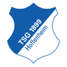

Futbol Defteri
Maçlar
Seçki
Karne
Arşiv
Ana sayfa
Bu hafta
Bundesliga
Bundesliga
9 maç
Cum 27 Kas
22:30
Werder Bremen
M'gladbach
3-3
bitti
Cmt 28 Kas
17:30
FC Koln
SV Elversberg
%48
Ev
17:30
Hamburg
Bayern Munich
%78
Dep.
17:30
Mainz
Union Berlin
%65
Ev
17:30
SC Paderborn 07
Schalke 04
%38
Ev
20:30
Stuttgart
Ein Frankfurt
%55
Ev
Paz 29 Kas
17:30
Freiburg
RB Leipzig
%40
Dep.
19:30

Hoffenheim
Augsburg
%57
Ev
21:30
Dortmund
Leverkusen
%46
Ev
Canlı
 FC Koln
FC Koln SV Elversberg
SV Elversberg Hamburg
Hamburg Bayern Munich
Bayern Munich Mainz
Mainz Union Berlin
Union Berlin Schalke 04
Schalke 04 Stuttgart
Stuttgart Ein Frankfurt
Ein Frankfurt Werder Bremen
Werder Bremen M'gladbach
M'gladbach Freiburg
Freiburg RB Leipzig
RB Leipzig Augsburg
Augsburg Dortmund
Dortmund Leverkusen
Leverkusen